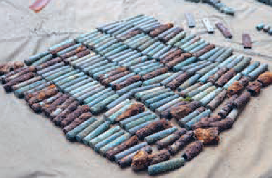
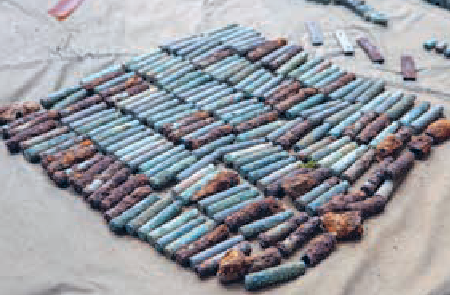
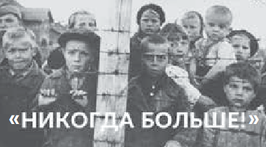

Расследование преступлений
Расследование уголовного дела о геноциде белорусского народа в годы Великой Отечественной войны и послевоенный период
В Республике Беларусь продолжается начатое в апреле 2021 года расследование уголовного дела о геноциде белорусского народа в годы Великой Отечественной войны и послевоенный период.
Ежедневно прокуроры, следователи, эксперты, историки и архивисты в рамках работы следственной группы Генеральной прокуратуры Республики Беларусь устанавливают новые факты преступлений нацистских оккупантов и их пособников.
В ходе расследования уголовного дела изучены руководящие документы гитлеровской Германии, которые возводили зверства по отношению к мирному населению в ранг государственной политики и освобождали солдат от ответственности за преступления, устанавливаются многочисленные, ранее неизвестные факты массового уничтожения нацистскими преступниками гражданского населения Беларуси.
 Генеральный прокурор Республики Беларусь А. И. Швед, Председатель Следственного комитета Республики Беларусь Д. Ю. Гора и Председатель Государственного комитета судебных экспертиз Республики Беларусь А. А. Волков на раскопках по делу о геноциде белорусского народа под Логойском
Генеральный прокурор Республики Беларусь А. И. Швед, Председатель Следственного комитета Республики Беларусь Д. Ю. Гора и Председатель Государственного комитета судебных экспертиз Республики Беларусь А. А. Волков на раскопках по делу о геноциде белорусского народа под Логойском
Проводится работа по фиксации информации от очевидцев тех событий и их родственников.
В ходе предварительного следствия допрошено свыше 17 тыс. человек, почти 8 тыс. из которых — бывшие узники лагерей смерти.

 Осмотр места массового уничтожения и захоронения мирных граждан в урочище Уручье Минского района. 2021 г.
Осмотр места массового уничтожения и захоронения мирных граждан в урочище Уручье Минского района. 2021 г.
Следственной группой изучено большое количество архивных документов и тысячи уголовных дел в отношении нацистских преступников.
Проведено более 400 осмотров мест происшествий, в ходе которых установлены ранее неизвестные места массовых убийств гражданского населения.
Расследованием устанавливаются обстоятельства массового сожжения населённых пунктов, часто вместе с их жителями.
До возбуждения уголовного дела о геноциде белорусского народа было известно о 9200 сожжённых населённых пунктах.
Путём допросов и изучения архивных документов прокурорами получены сведения о сожжении ещё свыше 2500 сёл и деревень.
 
Личные вещи, а также гильзы, обнаруженные в ходе проведения раскопок на месте массового уничтожения и захоронения людей

Личные вещи, а также гильзы, обнаруженные в ходе проведения раскопок на месте массового уничтожения и захоронения людей
По инициативе Генеральной прокуратуры:
- принят Закон «О недопущении реабилитации нацизма», направленный на недопущение всех форм и проявлений нацизма, оправдания его доктрины и практики, героизации нацистских преступников и их пособников;
- Палатой представителей Национального собрания Республики Беларусь в январе 2022 года принят Закон «О геноциде белорусского народа».
Закон «О геноциде белорусского народа» направлен на дальнейшее законодательное обеспечение защиты фундаментальных ценностей белорусского народа, недопущение реабилитации нацизма, установление действенных барьеров на пути попыток фальсификации событий и итогов Второй мировой войны, противодействие неонацистским проявлениям в современном белорусском обществе.
В статье 15 новой редакции Конституции, принятой в 2022 году, закреплено, что государство обеспечивает сохранение исторической правды и памяти о героическом подвиге белорусского народа в годы Великой Отечественной войны.
Принятые законы — это правовой барьер на пути попыток фальсификации событий и итогов Великой Отечественной войны.
По инициативе Генеральной прокуратуры и на основании сведений, полученных в ходе расследования уголовного дела о геноциде белорусского народа в годы Великой Отечественной войны и послевоенный период, Национальное кадастровое агентство опубликовало на Публичной кадастровой карте:
- пространственный слой, содержащий информацию о местоположении сожжённых населённых пунктов фашистскими оккупантами и их пособниками в годы войны;
- пространственный слой, содержащий информацию о местоположении лагерей смерти, действовавших в период немецко-фашистской оккупации.
Наполнение указанных слоев сведениями о сожжённых населённых пунктах и действовавших лагерях смерти продолжается
Под редакцией Генеральной прокуратуры опубликован сборник информационно-аналитических материалов и документов «Геноцид белорусского народа», а также подготовлено издание «Геноцид белорусского народа. Лагеря смерти», в котором представлены ранее неизвестные широкой общественности сведения о лагерях смерти на территории БССР в период оккупации.
Сведения из уголовного дела о геноциде белорусского народа позволят поставить перед международными организациями вопрос о признании Беларуси пострадавшей от геноцида, пресечь попытки обесценить историческую правду.
Расследование уголовного дела о геноциде советских граждан, белорусов, лиц иных национальностей и этнической принадлежности, находившихся на территории БССР в годы Великой Отечественной войны, является данью памяти погибшим и способствует исторической справедливости, направлено на защиту интересов белорусов как социальной общности и тем самым публичного интереса, в котором отражаются частные интересы безвинно уничтоженных граждан нашей страны и их потомков, служит реализации антифашистского принципа «Никогда больше!».
